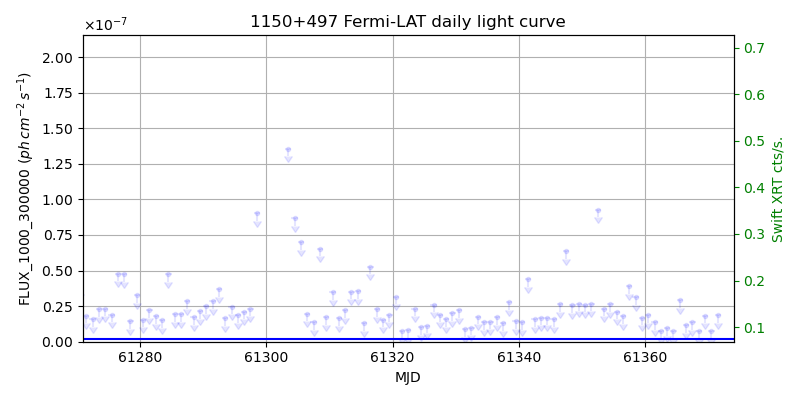

LAT Lightcurve site: https://fermi.gsfc.nasa.gov/ssc/data/access/lat/msl_lc/source/1150p497
Swift site: https://www.swift.psu.edu/monitoring/source.php?source=SBS1150+497
NED: Query
Time of last update of this page: UT: 2026-11-28 16:23 (MJD: 61372.683)
| Property | Value |
|---|---|
| R.A. | 11:53:24.48 |
| Dec. | 49:31:08.4 |
| z | 0.334 |
| 3FGL SpectrumType | PowerLaw |
| 3FGL PL Index | 2.38 |
| 3FGL Flux_100_300000 | 5.40e-08 1 / (s cm2) |
| 3FGL Flux_1000_300000 | 2.26e-09 1 / (s cm2) |
| 3FGL Flux >200 GeV | 1.52e-12 1 / (s cm2) |
| 3FGL Extrap. Crab >200 GeV | 0.01 |
| 3FGL Flux After EBL Absorption >200GeV | 4.55e-13 1 / (s cm2) |
| 3FGL EBL Crab Fraction >200GeV | 0.00 |
| MJD | dMJD | Flux | dFlux | Frac3FGL | FracCrab>200GeV | EBLFracCrab>200GeV |
|---|---|---|---|---|---|---|
| 61367.50 | 0.50 | 7.15e-08 | 0.00e+00 | 0.00 | 0.00 | 0.00 |
| 61368.50 | 0.50 | 1.43e-07 | 0.00e+00 | 0.00 | 0.00 | 0.00 |
| 61369.50 | 0.50 | 4.55e-08 | 0.00e+00 | 0.00 | 0.00 | 0.00 |
| 61370.50 | 0.50 | 5.22e-08 | 0.00e+00 | 0.00 | 0.00 | 0.00 |
| 61371.50 | 0.50 | 1.75e-07 | 0.00e+00 | 0.00 | 0.00 | 0.00 |

| MJD | dMJD | Flux | dFlux | Frac3FGL | FracCrab>200GeV | EBLFracCrab>200GeV |
|---|---|---|---|---|---|---|
| 61335.50 | 3.50 | 1.80e-07 | 0.00e+00 | 0.00 | 0.00 | 0.00 |
| 61342.50 | 3.50 | 3.31e-08 | 0.00e+00 | 0.00 | 0.00 | 0.00 |
| 61349.50 | 3.50 | 9.71e-08 | 0.00e+00 | 0.00 | 0.00 | 0.00 |
| 61356.50 | 3.50 | 7.61e-08 | 0.00e+00 | 0.00 | 0.00 | 0.00 |
| 61363.50 | 3.50 | 3.29e-08 | 0.00e+00 | 0.00 | 0.00 | 0.00 |

| MJD | dMJD | Flux | dFlux | Frac3FGL | FracCrab>200GeV | EBLFracCrab>200GeV |
|---|---|---|---|---|---|---|
| 61367.50 | 0.50 | 1.37e-08 | 0.00e+00 | 0.00 | 0.00 | 0.00 |
| 61368.50 | 0.50 | 7.21e-09 | 0.00e+00 | 0.00 | 0.00 | 0.00 |
| 61369.50 | 0.50 | 1.82e-08 | 0.00e+00 | 0.00 | 0.00 | 0.00 |
| 61370.50 | 0.50 | 7.31e-09 | 0.00e+00 | 0.00 | 0.00 | 0.00 |
| 61371.50 | 0.50 | 1.87e-08 | 0.00e+00 | 0.00 | 0.00 | 0.00 |

| MJD | dMJD | Flux | dFlux | Frac3FGL | FracCrab>200GeV | EBLFracCrab>200GeV |
|---|---|---|---|---|---|---|
| 61335.50 | 3.50 | 2.51e-09 | 0.00e+00 | 0.00 | 0.00 | 0.00 |
| 61342.50 | 3.50 | 3.75e-09 | 0.00e+00 | 0.00 | 0.00 | 0.00 |
| 61349.50 | 3.50 | 9.63e-09 | 0.00e+00 | 0.00 | 0.00 | 0.00 |
| 61356.50 | 3.50 | 4.58e-09 | 0.00e+00 | 0.00 | 0.00 | 0.00 |
| 61363.50 | 3.50 | 1.47e-09 | 0.00e+00 | 0.00 | 0.00 | 0.00 |
--------------------------------------------------------- Using user-supplied coords: 11:53:24.48 49:31:08.4 2000 --------------------------------------------------------- FLWO UT night of: 2026-11-29 Local Sid. @ Midnight: 04:08 Sunset (-15.0) (local, UT): 18:31 01:31 Sunrise (-15.0) (local, UT): 05:53 12:53 Moonrise (local, UT): 21:57 04:57 Moonset (local, UT): Moon phase: 0.72 --------------------------------------------------------- AzTime LSID UT Obj_el Obj_az Mn_el Mn_az Sep. --------------------------------------------------------- 18:31 22:39 01:31 -7.2 347.7 -32.9 32.1 48.4 19:01 23:09 02:01 -8.3 352.6 -29.4 38.9 48.2 19:31 23:39 02:31 -8.9 357.5 -25.4 45.0 48.0 20:01 00:09 03:01 -8.9 2.4 -21.0 50.6 47.9 20:31 00:39 03:31 -8.3 7.3 -16.2 55.6 47.7 21:01 01:09 04:01 -7.2 12.2 -11.1 60.2 47.6 21:31 01:39 04:31 -5.4 16.8 -5.4 64.5 47.4 22:01 02:09 05:01 -2.2 21.3 0.4 68.5 47.3 22:31 02:39 05:31 -0.4 25.5 5.8 72.2 47.2 23:01 03:10 06:01 2.2 29.4 11.6 75.8 47.1 23:31 03:40 06:31 5.4 33.0 17.5 79.4 46.9 00:01 04:10 07:01 9.0 36.3 23.6 82.9 46.9 00:31 04:40 07:31 12.9 39.3 29.7 86.5 46.8 01:01 05:10 08:01 17.0 41.9 35.8 90.3 46.7 01:31 05:40 08:31 21.4 44.2 42.0 94.4 46.6 02:01 06:10 09:01 25.9 46.2 48.1 99.1 46.6 02:31 06:40 09:31 30.6 47.8 54.2 104.7 46.5 03:01 07:10 10:01 35.4 49.0 60.1 111.7 46.5 03:31 07:40 10:31 40.2 49.8 65.6 121.1 46.5 04:01 08:10 11:01 45.1 49.9 70.5 134.7 46.4 04:31 08:40 11:31 50.0 49.3 74.0 154.7 46.4 05:01 09:11 12:01 54.8 47.8 75.2 181.1 46.4 05:31 09:41 12:31 59.4 44.9 73.6 206.8 46.4 05:53 10:02 12:53 62.6 41.6 71.0 221.2 46.4 --------------------------------------------------------- Dark hours >55 deg.: 0.00